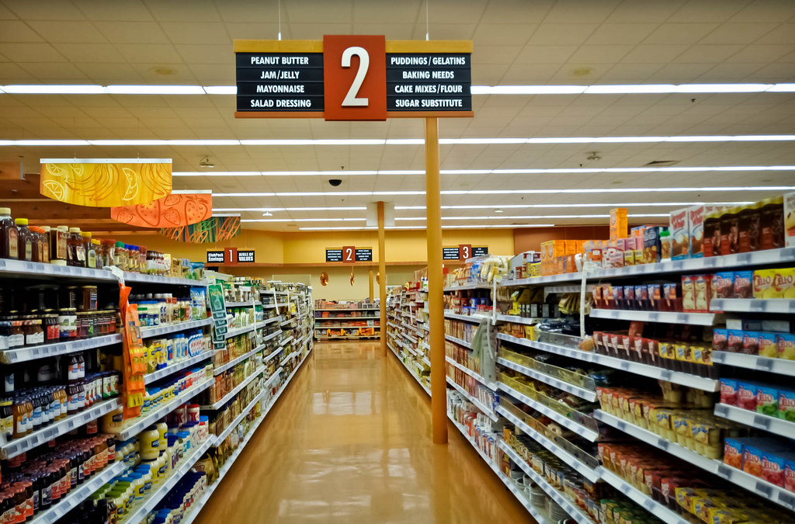
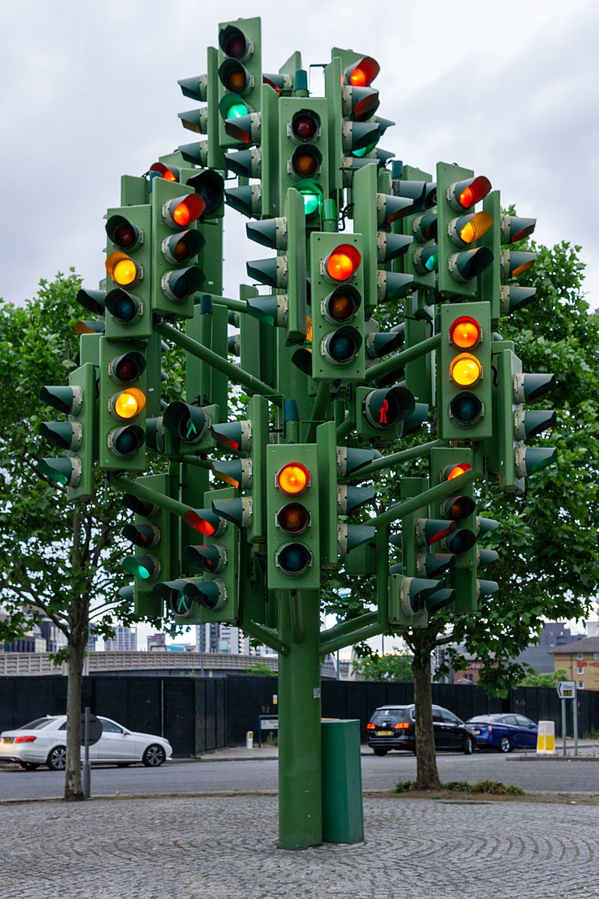

Navigating the web! Book Club: Don't Make me Think - Chapter 6
Andrew Nolan
4/14/2023
Websites are a lot like shopping in stores. You can browse or search (ask for help). There should be signs to guide you and show you were you are. Each aisle is like a page. And much like good websites, stores have some sort of hierarchy you can navigate.
However, designing an easily navigable place on the web is tougher.
On the web, there is no sense of scale. In a store, you can estimate the size pretty well. A website could have many secrets and subpages.
On the web, there is also no sense of direction nor physical location. No left or right. No up or down. Where did we come from, where did we go? On the web there is only the hierarchy. It's hard to find where you are.
Or, it would be hard if we didn't have good design principles to help with this.
Web navigation is essential. It is not just another feature or something that is nice to have. Without navigation, there is no web. There are a few obvious reasons we need navigation on our websites:- It helps us find what we want.
- It helps us know where we are.
But there are also some not so obvious reasons we need navigation too:
- It tells us what else is here.
- It tells us how to use the site and how things are connected.
- Good navigation gives us confidence in the people who built the site.
Although we can make a metaphor to a store, they are different. There is a reason we don't talk about library or grocery store navigation. It's easier. Designing good navigation for the web is as hard as it is important.
So, we know navigation is very important. We better make sure that our navigation is good then too.
The first thing to keep in mind is conventions. If there is one thing Krug continues to emphasize in this book, it's the importance of conventions.
Imagine how annoying it would be if every road used different street signs and stop light styles.
Think about when you read a book that has no table of contents or page numbers.
Conventions are there to make life easier. There is a pervasive mindset to redesign the web or make it art. And there is a time and place for that, I love good aesthetics. But if you are trying to build a site that is easy to use, conventions will help a lot with that.
Some important conventions every website should have.
- Have a header at the top of the page.
- Put the site name or logo in corner.
- Utilities or search go in the other corner.
- There should be some navigation sections below.
- Make sure the navigation sections indicate where you are in site.
- The page name should be prominently displayed.
- A local navigation menu goes on the left or top.
- At the bottom the footer should have some navigation too.
From that list you may have noticed navigation is very important. Not only does it get its own place, it is also in the header and footer of every page. These navigation elements should be persistent and consistent.
Every page should have these features, and they should also be the same on each page. If a header disappears or drastically changes, it will confuse users.
In all these navigation elements, there are four things you should have:
- The site name or logo.
- Utilities like login, support, etc...
- An option to search.
- Section level navigation.
Another thing you may have noticed is that search comes up a lot. Search can be difficult to implement and may not be your top priority when developing a new app. But I encourage you to consider it! Usability consultant and Human-Computer Interaction researcher, Jakob Nielsen, categorized web users as two groups: search-dominant and link-dominant. Search-dominant users prefer to search for what they want, while link-dominant users navigate the hierarchy by clicking. Estimates show search users make up about 50% of the customer base. So, search is good to have!
It is also important to make sure users know where they are. In a store, you see the sign when you walk in and you know where you are. But with a website, you can arrive on any page. It's important to keep the title and navigation clear on every page so no one gets lost.
A great way to test if a website's navigation is clear and strong is with what Krug calls the "Trunk Test." Imagine you have escaped the trunk of the car, can you tell where you are?
Try this on a random website (not going in a trunk, but blindly entering a website). The navigation is strong if you can answer these questions within seconds:
- What site is this?
- What page am I on?
- What are the major sections of this site?
- What are my options at this level?
- Where am I in the scheme of things?
- How can I search?
If you know where you are and can find where you are going, the site has done a good job with navigation.

I hope it is clear that navigation is important, and with some of these tips you can prevent your users from getting lost!
Enjoyed this article? Subscribe to the RSS Feed!